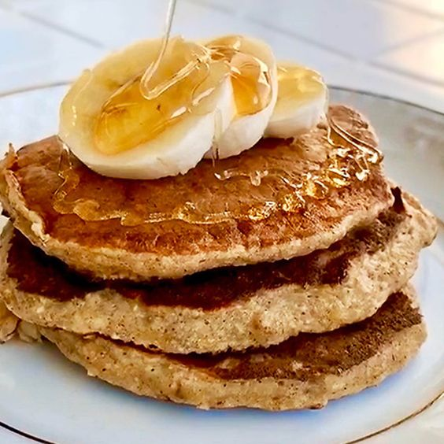
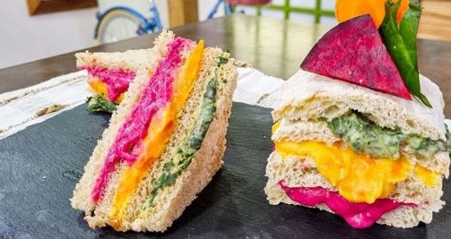
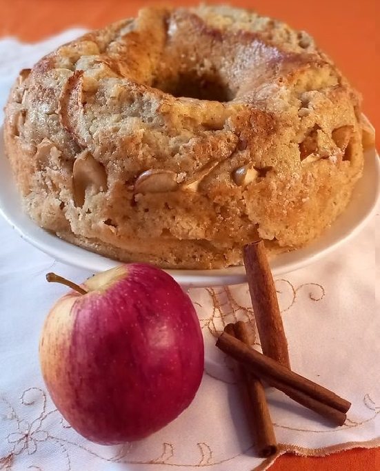

CADASTRE-SE E TENHA ACESSO A CONTEÚDOS EXCLUSIVOS:
Deliciosas receitas saudáveis para uma vida equilibrada

PANQUECA DE BANANA
INGREDIENTES:
2 bananas maduras
2 ovos
1/2 xícara de aveia em flocos
1 colher de chá de fermento em pó
1/2 colher de chá de canela em pó (opcional)
óleo de coco ou manteiga para untar a frigideira
MODO DE PREPARO:
Em uma tigela, amasse as bananas com um garfo até obter uma consistência cremosa.
Adicione os ovos às bananas amassadas e misture bem até ficar homogêneo.
Acrescente a aveia em flocos, o fermento em pó e a canela em pó (se estiver usando). Mexa até que todos os
ingredientes estejam incorporados.
Aqueça uma frigideira antiaderente em fogo médio e unte-a com óleo de coco ou manteiga.
Despeje pequenas porções da massa na frigideira.
Cozinhe as panquecas por cerca de 2-3 minutos, até que a parte de baixo esteja dourada e as bordas estejam firmes.
Vire as panquecas com cuidado e cozinhe por mais 1-2 minutos do outro lado, até ficarem bem douradas.
Repita o processo com o restante da massa.
Sirva as panquecas de banana quentes, acompanhadas de frutas, pasta de amendoim ou mel, se desejar.
PÃO DE QUEIJO
INGREDIENTES:
2 xícaras de polvilho azedo
1 xícara de polvilho doce
1 colher de chá de sal
1/2 xícara de água
1/4 de xícara de óleo de coco
2 ovos
1 xícara de queijo minas padrão ralado ou queijo coalho ralado
MODO DE PREPARO:
Preaqueça o forno a 200°C e forre uma assadeira com papel manteiga.
Em uma panela, aqueça a água e o óleo de coco em fogo baixo até ferver. Desligue o fogo.
Em uma tigela grande, misture o polvilho azedo, o polvilho doce e o sal.
Despeje a mistura de água e óleo de coco fervente sobre os ingredientes secos na tigela. Misture bem até que a
massa esteja homogênea.
Adicione os ovos à massa e continue misturando até incorporá-los completamente.
Acrescente o queijo ralado à massa e misture até que esteja bem distribuído.
Com as mãos levemente umedecidas, pegue pequenas porções de massa e forme bolinhas.
Coloque as bolinhas na assadeira preparada, deixando espaço entre elas para que não grudem durante o crescimento.
Leve ao forno preaquecido e asse por aproximadamente 20-25 minutos, ou até que os pães de queijo fiquem dourados.

SANDUÍCHE COLORIDO
INGREDIENTES:
1 xícara de espinafre cozido
1 e 1/2 xícara de água fervente
6 colheres de sopa de azeite
1 cebola picada
3 dentes de alho amassados
sal e pimenta a gosto
1 xícara de beterraba cozida
1 xícara de cenoura cozida
pão de forma integral
MODO DE PREPARO:
No liquidificador, coloque o espinafre e cerca de 1/2 xícara de água fervente.
Bata até formar uma pasta e reserve.
Aqueça o azeite em uma panela e refogue 1/3 da cebola picada e 1/3 do alho, até dourar.
Acrescente a pasta de espinafre e cozinhe por alguns minutos.
Tempere com sal e pimenta e reserve.
Bata a beterraba no liquidificador com 1/2 xícara de água fervente, até formar uma pasta, e reserve.
Refogue mais 1/3 da cebola e do alho e adicione a pasta de beterraba.
Cozinhe por alguns minutos, tempere com sal e pimenta e reserve.
Repita o processo com a cenoura, batendo com 1/2 xícara de água no liquidificador e refogando com o restante da cebola e do alho.
Tempere com sal e pimenta e cozinhe por alguns minutos.
Em uma fatia de pão de forma, monte uma camada com cada pasta colorida e feche com outra fatia de pão de forma.

BOLO DE MAÇÃ E CANELA
INGREDIENTES:
2 maçãs grandes, descascadas e picadas em cubos
2 xícaras de farinha de trigo integral
1/2 xícara de açúcar mascavo
1/4 de xícara de óleo de coco
2 ovos
1 colher de chá de canela em pó
1 colher de chá de fermento em pó
uma pitada de sal
MODO DE PREPARO:
Preaqueça o forno a 180°C e unte uma forma de bolo com óleo de coco ou forre-a com papel manteiga.
Em uma tigela, misture a farinha de trigo integral, o açúcar mascavo, a canela em pó, o fermento em pó,
o bicarbonato de sódio e o sal.
Em outra tigela, bata os ovos com o óleo de coco até obter uma mistura homogênea.
Adicione os ingredientes secos à mistura de ovos e óleo de coco, mexendo até incorporar completamente.
Acrescente as maçãs picadas à massa e misture delicadamente.
Despeje a massa na forma preparada e nivele a superfície com uma espátula.
Asse no forno preaquecido por aproximadamente 40-45 minutos, ou até que um palito inserido no centro do bolo saia limpo.